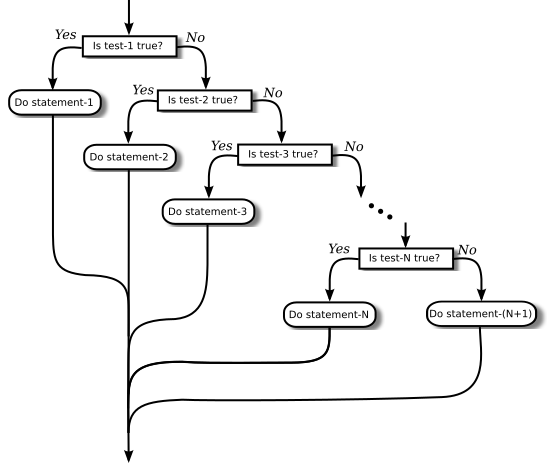

The If statement
The first of the two branching statements in Java is the if statement, which you have already seen in Section 3.1. It takes the form
if (boolean-expression)
statement-1
else
statement-2
As usual, the statements inside an if statement can be blocks. The if statement represents a two-way branch. The else part of an if statement—consisting of the word "else" and the statement that follows it—can be omitted.
The Dangling else Problem
Now, an if statement is, in particular, a statement. This means that either statement-1 or statement-2 in the above if statement can itself be an if statement. A problem arises, however, if statement-1 is an if statement that has no else part. This special case is effectively forbidden by the syntax of Java. Suppose, for example, that you type
if ( x > 0 )
if (y > 0)
System.out.println("First case");
else
System.out.println("Second case");Now, remember that the way you've indented this doesn't mean anything at all to the computer. You might think that the else part is the second half of your "if (x > 0)" statement, but the rule that the computer follows attaches the else to "if (y > 0)", which is closer. That is, the computer reads your statement as if it were formatted:
if ( x > 0 )
if (y > 0)
System.out.println("First case");
else
System.out.println("Second case");You can force the computer to use the other interpretation by enclosing the nested if in a block:
if ( x > 0 ) {
if (y > 0)
System.out.println("First case");
}
else
System.out.println("Second case");These two if statements have different meanings: In the case when x <= 0, the first statement doesn't print anything, but the second statement prints "Second case".
Multiway Branching
Much more interesting than this technicality is the case where statement-2, the else part of the if statement, is itself an if statement. The statement would look like this (perhaps without the final else part):
if (boolean-expression-1)
statement-1
else
if (boolean-expression-2)
statement-2
else
statement-3
However, since the computer doesn't care how a program is laid out on the page, this is almost always written in the format:
if (boolean-expression-1)
statement-1
else if (boolean-expression-2)
statement-2
else
statement-3
You should think of this as a single statement representing a three-way branch. When the computer executes this, one and only one of the three statements—statement-1, statement-2, or statement-3—will be executed. The computer starts by evaluating boolean-expression-1. If it is true, the computer executes statement-1 and then jumps all the way to the end of the outer if statement, skipping the other two statements. If boolean-expression-1 is false, the computer skips statement-1 and executes the second, nested if statement. To do this, it tests the value of boolean-expression-2 and uses it to decide between statement-2 and statement-3.
Here is an example that will print out one of three different messages, depending on the value of a variable named temperature:
if (temperature < 50)
System.out.println("It's cold.");
else if (temperature < 80)
System.out.println("It's nice.");
else
System.out.println("It's hot.");If temperature is, say, 42, the first test is true. The computer prints out the message "It's cold", and skips the rest—without even evaluating the second condition. For a temperature of 75, the first test is false, so the computer goes on to the second test. This test is true, so the computer prints "It's nice" and skips the rest. If the temperature is 173, both of the tests evaluate to false, so the computer says "It's hot" (unless its circuits have been fried by the heat, that is).
You can go on stringing together "else-if's" to make multiway branches with any number of cases:
if (test-1)
statement-1
else if (test-2)
statement-2
else if (test-3)
statement-3
.
. // (more cases)
.
else if (test-N)
statement-N
else
statement-(N+1)
The computer evaluates the tests, which are boolean expressions, one after the other until it comes to one that is true. It executes the associated statement and skips the rest. If none of the boolean expressions evaluate to true, then the statement in the else part is executed. This statement is called a multiway branch because one and only one of the statements will be executed. The final else part can be omitted. In that case, if all the boolean expressions are false, none of the statements are executed. Of course, each of the statements can be a block, consisting of a number of statements enclosed between { and }. Admittedly, there is lot of syntax here; as you study and practice, you'll become comfortable with it. It might be useful to look at a flow control diagram for the general "if..else if" statement shown above:

If Statement Examples
As an example of using if statements, let's suppose that x, y, and z are variables of type int, and that each variable has already been assigned a value. Consider the problem of printing out the values of the three variables in increasing order. For example, if the values are 42, 17, and 20, then the output should be in the order 17, 20, 42.
One way to approach this is to ask, where does x belong in the list? It comes first if it's less than both y and z. It comes last if it's greater than both y and z. Otherwise, it comes in the middle. We can express this with a 3-way if statement, but we still have to worry about the order in which y and z should be printed. In pseudocode,
if (x < y && x < z) {
output x, followed by y and z in their correct order
}
else if (x > y && x > z) {
output y and z in their correct order, followed by x
}
else {
output x in between y and z in their correct order
}Determining the relative order of y and z requires another if statement, so this becomes
if (x < y && x < z) { // x comes first
if (y < z)
System.out.println( x + " " + y + " " + z );
else
System.out.println( x + " " + z + " " + y );
}
else if (x > y && x > z) { // x comes last
if (y < z)
System.out.println( y + " " + z + " " + x );
else
System.out.println( z + " " + y + " " + x );
}
else { // x in the middle
if (y < z)
System.out.println( y + " " + x + " " + z);
else
System.out.println( z + " " + x + " " + y);
}You might check that this code will work correctly even if some of the values are the same. If the values of two variables are the same, it doesn't matter which order you print them in.
Note, by the way, that even though you can say in English "if x is less than y and z," you can't say in Java "if (x < y && z)". The && operator can only be used between boolean values, so you have to make separate tests, x<y and x<z, and then combine the two tests with &&.
There is an alternative approach to this problem that begins by asking, "which order should x and y be printed in?" Once that's known, you only have to decide where to stick in z. This line of thought leads to different Java code:
if ( x < y ) { // x comes before y
if ( z < x ) // z comes first
System.out.println( z + " " + x + " " + y);
else if ( z > y ) // z comes last
System.out.println( x + " " + y + " " + z);
else // z is in the middle
System.out.println( x + " " + z + " " + y);
}
else { // y comes before x
if ( z < y ) // z comes first
System.out.println( z + " " + y + " " + x);
else if ( z > x ) // z comes last
System.out.println( y + " " + x + " " + z);
else // z is in the middle
System.out.println( y + " " + z + " " + x);
}Once again, we see how the same problem can be solved in many different ways. The two approaches to this problem have not exhausted all the possibilities. For example, you might start by testing whether x is greater than y. If so, you could swap their values. Once you've done that, you know that x should be printed before y.
Finally, let's write a complete program that uses an if statement in an interesting way. I want a program that will convert measurements of length from one unit of measurement to another, such as miles to yards or inches to feet. So far, the problem is extremely under-specified. Let's say that the program will only deal with measurements in inches, feet, yards, and miles. It would be easy to extend it later to deal with other units. The user will type in a measurement in one of these units, such as "17 feet" or "2.73 miles". The output will show the length in terms of each of the four units of measure. (This is easier than asking the user which units to use in the output.) An outline of the process is
Read the user's input measurement and units of measure
Express the measurement in inches, feet, yards, and miles
Display the four resultsThe program can read both parts of the user's input from the same line by using TextIO.getDouble() to read the numerical measurement and TextIO.getlnWord() to read the unit of measure. The conversion into different units of measure can be simplified by first converting the user's input into inches. From there, the number of inches can easily be converted into feet, yards, and miles. Before converting into inches, we have to test the input to determine which unit of measure the user has specified:
Let measurement = TextIO.getDouble()
Let units = TextIO.getlnWord()
if the units are inches
Let inches = measurement
else if the units are feet
Let inches = measurement * 12 // 12 inches per foot
else if the units are yards
Let inches = measurement * 36 // 36 inches per yard
else if the units are miles
Let inches = measurement * 12 * 5280 // 5280 feet per mile
else
The units are illegal!
Print an error message and stop processing
Let feet = inches / 12.0
Let yards = inches / 36.0
Let miles = inches / (12.0 * 5280.0)
Display the resultsSince units is a String, we can use units.equals("inches") to check whether the specified unit of measure is "inches". However, it would be nice to allow the units to be specified as "inch" or abbreviated to "in". To allow these three possibilities, we can check if (units.equals("inches") || units.equals("inch") || units.equals("in")). It would also be nice to allow upper case letters, as in "Inches" or "IN". We can do this by converting units to lower case before testing it or by substituting the function units.equalsIgnoreCase for units.equals.
In my final program, I decided to make things more interesting by allowing the user to repeat the process of entering a measurement and seeing the results of the conversion for each measurement. The program will end only when the user inputs 0. To program that, I just had to wrap the above algorithm inside a while loop, and make sure that the loop ends when the user inputs a 0. Here's the complete program:
import textio.TextIO;
/**
* This program will convert measurements expressed in inches,
* feet, yards, or miles into each of the possible units of
* measure. The measurement is input by the user, followed by
* the unit of measure. For example: "17 feet", "1 inch", or
* "2.73 mi". Abbreviations in, ft, yd, and mi are accepted.
* The program will continue to read and convert measurements
* until the user enters an input of 0.
*/
public class LengthConverter {
public static void main(String[] args) {
double measurement; // Numerical measurement, input by user.
String units; // The unit of measure for the input, also
// specified by the user.
double inches, feet, yards, miles; // Measurement expressed in
// each possible unit of
// measure.
System.out.println("""
Enter measurements in inches, feet, yards, or miles.
For example: 1 inch 17 feet 2.73 miles
You can use abbreviations: in ft yd mi
I will convert your input into the other units
of measure.
""");
while (true) {
/* Get the user's input, and convert units to lower case. */
System.out.print("Enter your measurement, or 0 to end: ");
measurement = TextIO.getDouble();
if (measurement == 0)
break; // Terminate the while loop.
units = TextIO.getlnWord();
units = units.toLowerCase(); // convert units to lower case
/* Convert the input measurement to inches. */
if (units.equals("inch") || units.equals("inches")
|| units.equals("in")) {
inches = measurement;
}
else if (units.equals("foot") || units.equals("feet")
|| units.equals("ft")) {
inches = measurement * 12;
}
else if (units.equals("yard") || units.equals("yards")
|| units.equals("yd")) {
inches = measurement * 36;
}
else if (units.equals("mile") || units.equals("miles")
|| units.equals("mi")) {
inches = measurement * 12 * 5280;
}
else {
System.out.println("Sorry, but I don't understand \""
+ units + "\".");
continue; // back to start of while loop
}
/* Convert measurement in inches to feet, yards, and miles. */
feet = inches / 12;
yards = inches / 36;
miles = inches / (12*5280);
/* Output measurement in terms of each unit of measure. */
System.out.printf("""
That's equivalent to:
%14.5g inches
%14.5g feet
%14.5g yards
%14.5g miles
""", inches, feet, yards, miles);
System.out.println();
} // end while
System.out.println();
System.out.println("OK! Bye for now.");
} // end main()
} // end class LengthConverter
(Note that this program uses text blocks for multiline outputs (see Subsection 2.3.4; text blocks require Java 17). It also uses formatted output with the "g" format specifier. In this program, we have no control over how large or how small the numbers might be. It could easily make sense for the user to enter very large or very small measurements. The "g" format will print a real number in exponential form if it is very large or very small, and in the usual decimal form otherwise. Remember that in the format specification %14.5g, the 5 is the total number of significant digits that are to be printed, so we will always get the same number of significant digits in the output, no matter what the size of the number. If we had used an "f" format specifier such as %14.5f, the output would be in decimal form with 5 digits after the decimal point. This would print the number 0.000000000745482 as 0.00000, with no significant digits at all! With the "g" format specifier, the output would be 7.4549e-10.)
The Empty Statement
As a final note in this section, I will mention one more type of statement in Java: the empty statement. This is a statement that consists simply of a semicolon and which tells the computer to do nothing. The existence of the empty statement makes the following legal, even though you would not ordinarily see a semicolon after a } :
if (x < 0) {
x = -x;
};The semicolon is legal after the }, but the computer considers it to be an empty statement, not part of the if statement. Occasionally, you might find yourself using the empty statement when what you mean is, in fact, "do nothing." For example, the rather contrived if statement
if ( done )
; // Empty statement
else
System.out.println( "Not done yet.");does nothing when the boolean variable done is true, and prints out "Not done yet" when it is false. You can't just leave out the semicolon in this example, since Java syntax requires an actual statement between the if and the else. I prefer, though, to use an empty block, consisting of { and } with nothing between, for such cases.
Occasionally, stray empty statements can cause annoying, hard-to-find errors in a program. For example, the following program segment prints out "Hello" just once, not ten times:
for (i = 0; i < 10; i++);
System.out.println("Hello");Why? Because the ";" at the end of the first line is a statement, and it is this empty statement that is executed ten times. The System.out.println statement is not really inside the for statement at all, so it is executed just once, after the for loop has completed. The for loop just does nothing, ten times!